GAFF WORKS


Alabama Sweetheart
2026 | dir. William Morrow | Narrative Short | English
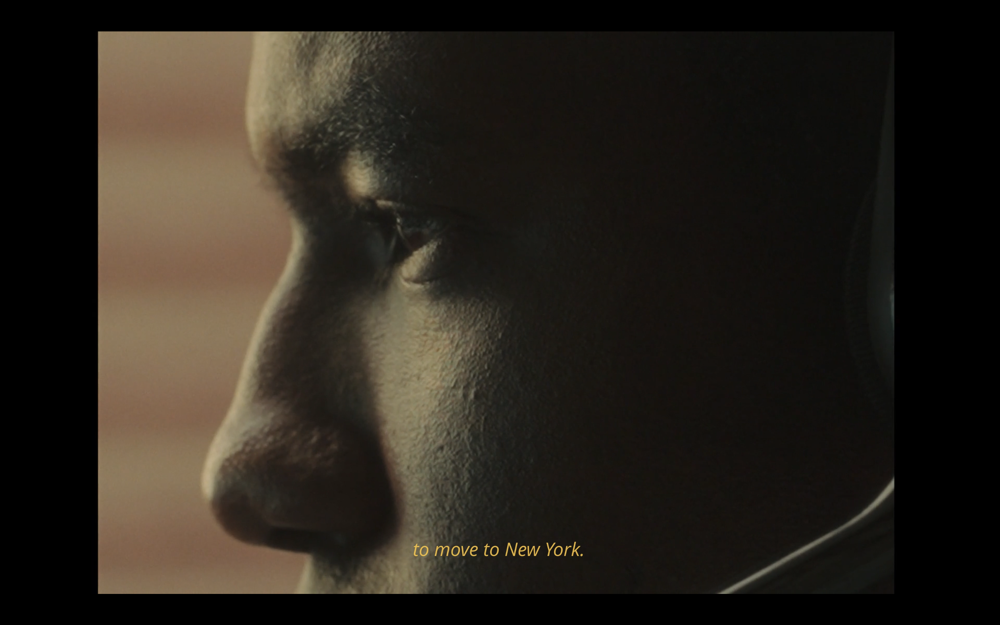
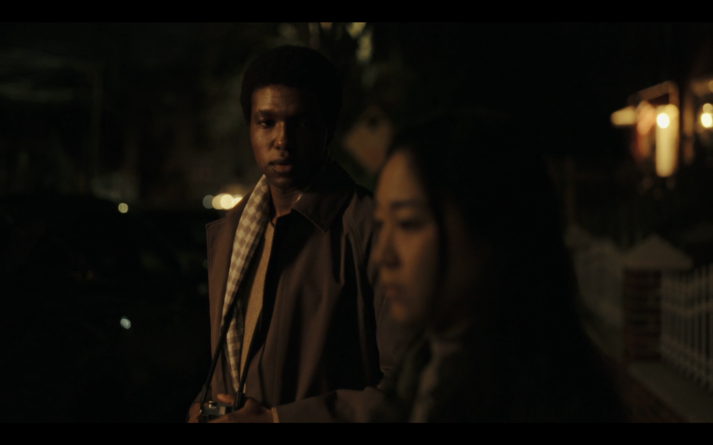
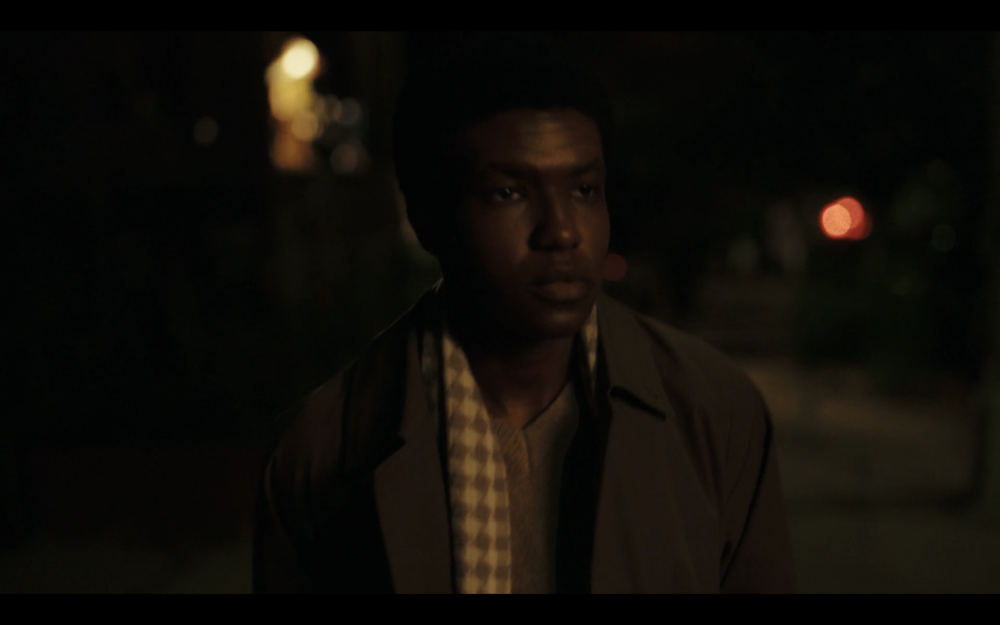
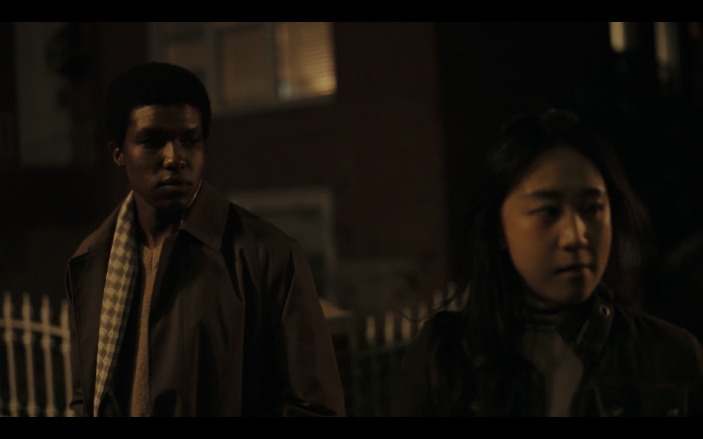
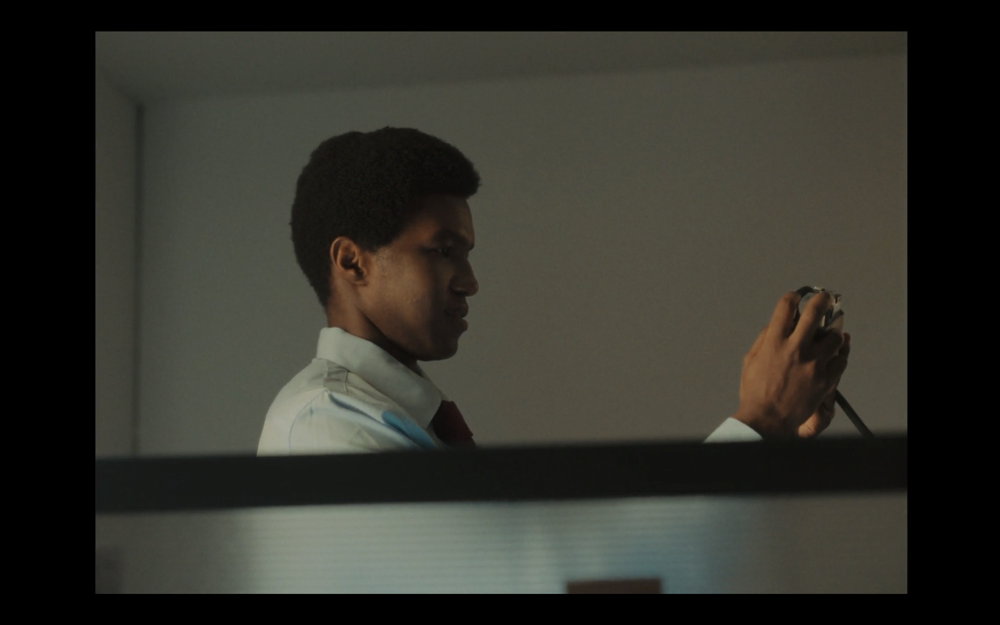
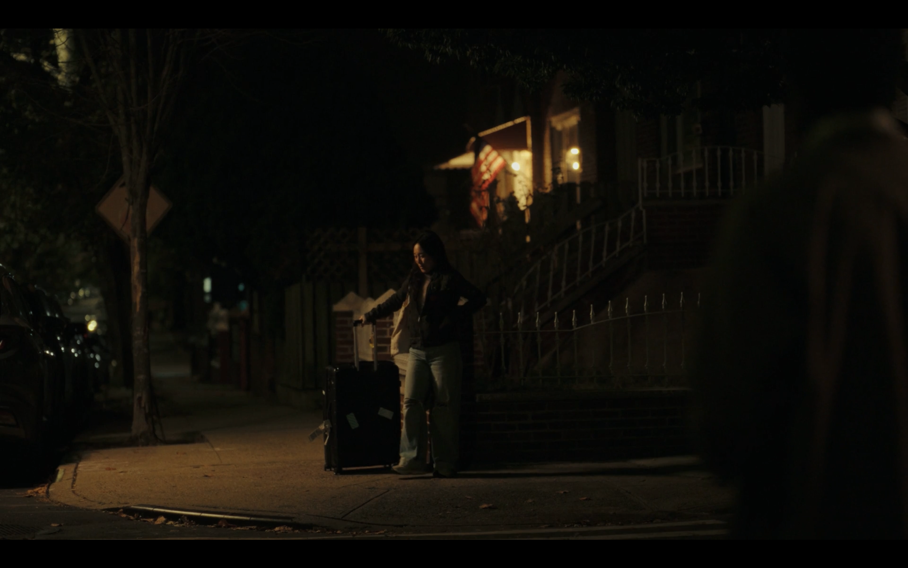

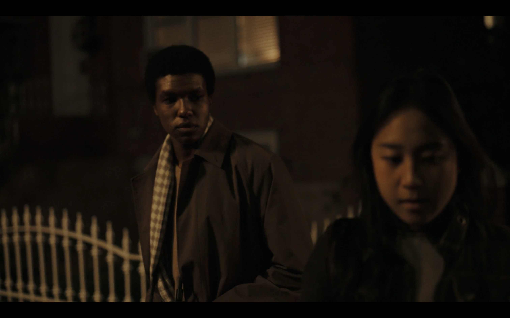
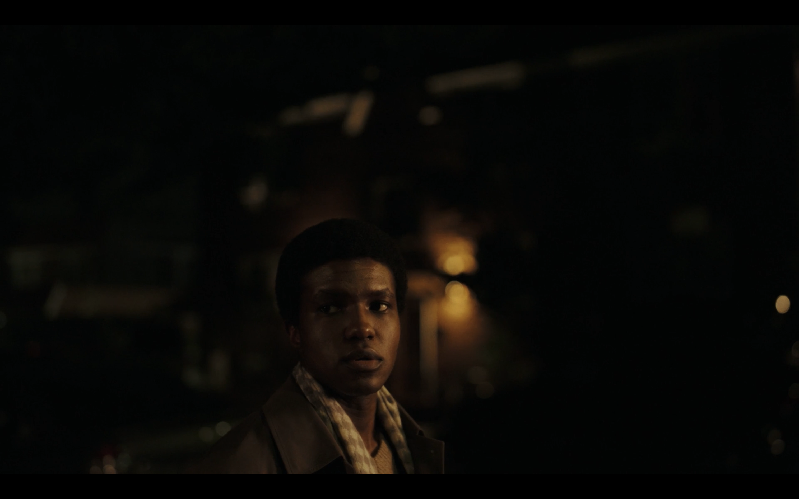
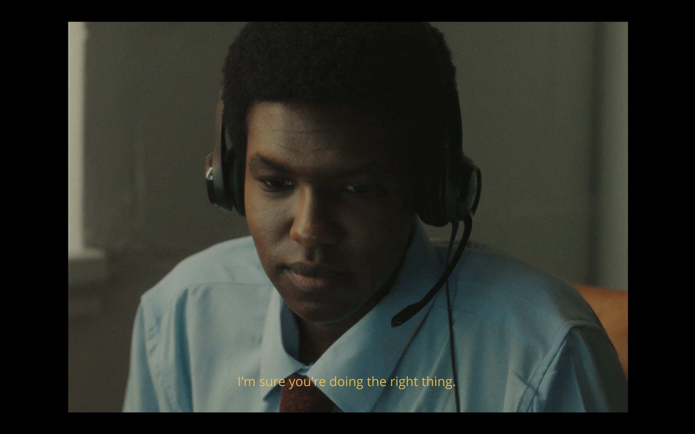
Liminal
2026 | dir. Ningyi Sun | Narrative Short | English


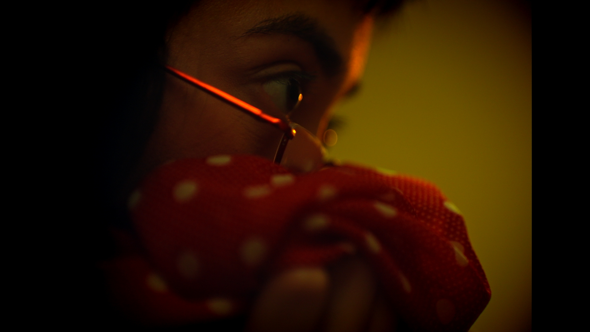
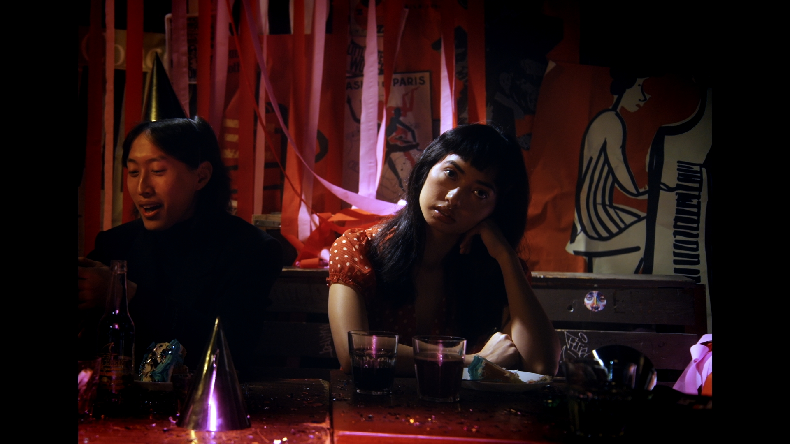
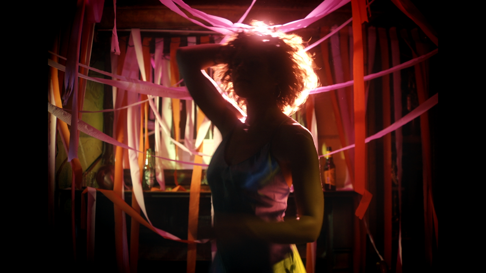
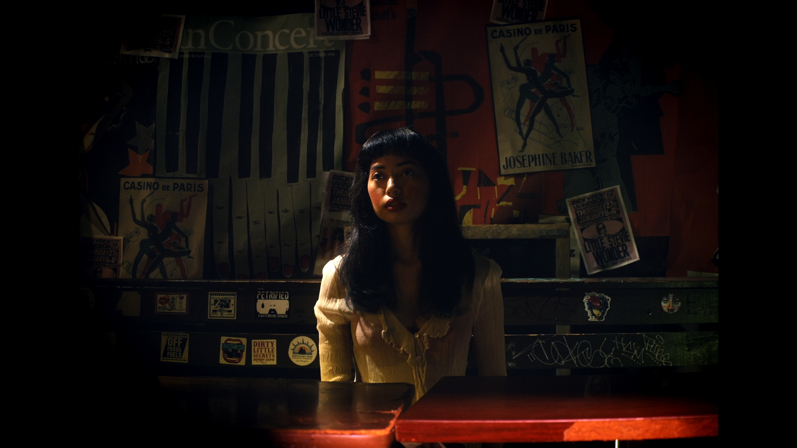
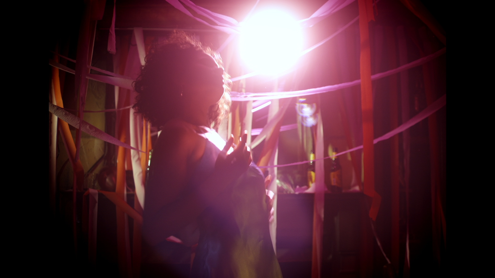
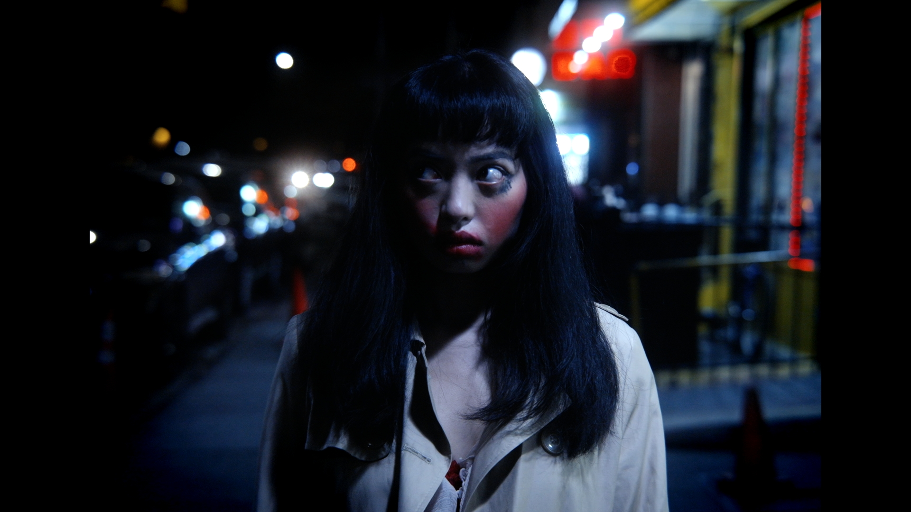
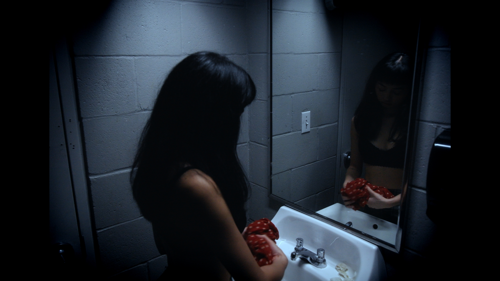
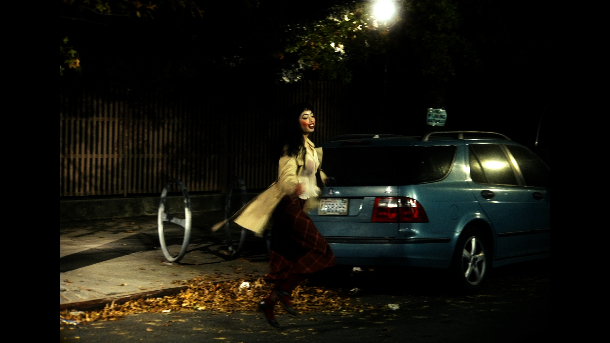
It’s Me! I Am the Disco
2025 | dir. Kemi Starr | Narrative Short | English


Corner of My Eye
2025 | dir. Tomas Talemantes | Narrative Short | English


Ryer Ave
2024 | dir. Vidhu Kota | Music Video for Mike Osei | English